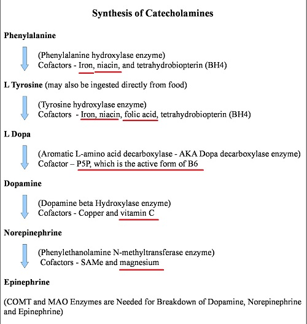
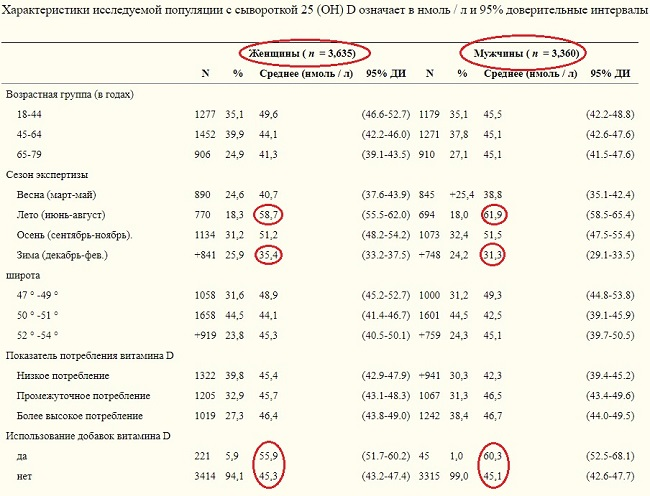
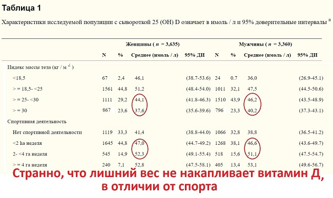
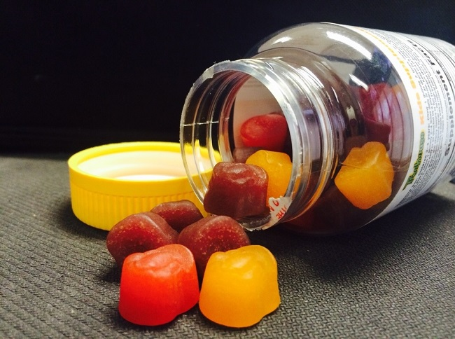
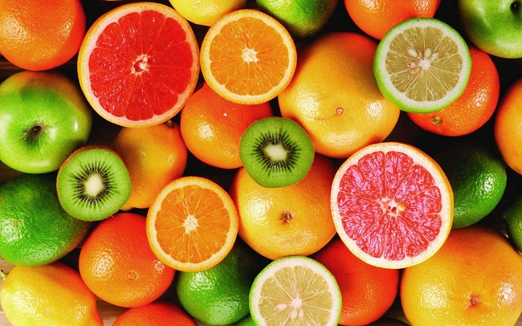

Витамины: Исследования, Дефицит, Зачем Принимать

Всем привет! Если вы слышите, что витамины нам не нужны, что мы итак их откуда-то там получаем, что организм сам их синтезирует и нет смысла принимать их дополнительно, то вероятно перед вами дилетант или человек, далекий от медицины. Почему?
Ох уж эти витамины, у них хейтеров наверно даже побольше, чем у ноотропов!
Что ж, давайте приступим!
Витамины – это соединения, которые необходимы нашему организму для самых разных функций. Всего витаминов 13 штук!
И раз уж у нас основная тема канала биохакинг, ноотропы и мозг, то знайте: витамины учавствуют в обменных процессах. Как пример, с их помощью создаются те самые нейромедиаторы из простых аминокислот. Жирорастворимые организм способен накапливать, водорастворимые скорее нет.
Первый логический вывод: важно регулярное поступление витаминов. Они сработают и как ноотропы. Если у тебя есть недостаток, то можешь быть уверен: простые мультивитамины конкретно улучшат тебе состояние! Витамины нам всем нужны!
{kind=link}
Споры (не Грибов)
В отношении витаминов есть жаркие споры, что они могут повышать заболеваемость разными видами рака – это одна позиция и, что нет никаких минусов – вторая позиция. Если мы говорим про метаанализы, то скорее польза (Ссылка 1 , 2 , 3, 4, 5, 6, 7, 8). Естественно, тут не идет речь о сильно завышенных показателях.
О дефиците витаминов
Как мы понимаем, если человек более менее нормально ест, то и меньше риск, что ему что-то там еще понадобится. США наверно не самая отсталая или голодающая страна в мире, так вот их Министерство по контролю и профилактике заболеваний представило отчет, что 22% американцев имеют явный дефицит хотя бы одного витамина (9). И это с их фанатизмом от ЗОЖа, где даже бабульки стараются правильно питаться. Там так же и проблема ожирения – это избыточное получение веществ, куда и витамины по логике попадают. Там и солнца много из-за близости к экватору.
И все равно каждый 4-й, каждый 5-й американец в дефиците. Если мы копнем поглубже и добавим микроэлементы, то найдем даже организацию «International Micronutrient Malnutrition Prevention and Control (IMMPaCt)», где прямо написано, что треть населения планеты имеют недостаток каких-то микронутриентов (10).
Что уж говорить о более бедных и холодных странах. В России данные очень противоречивы, вплоть до того, что 90% населения имеют дефицит или недостаточный уровень витаминов.
В Германии, данные более точные и объемные! Так средний уровень витамина Д, у типичного немца равен 45 нмоль/л, при норме от 50 нмоль! Выборка не 10 пенсионеров, а все возраста и почти 7 тыс человек! В явном дефиците аж 30% (11).
{kind=link}
Отличия летом и зимой почти в 2 раза. Так что мы не медведи, и запастись даже жирорастворимым витамином Д не способны.
{kind=link}
И еще пара примеров!
Пример 1. Чем меньше солнца – тем меньше витамина Д. А чем меньше этого витамина, тем выше смертность от всех причин по данным огромного метаанализа с выборкой 26 тыс человек (12). Ну что? Часто бываешь на солнце, хотя бы летом?))
Пример 2: Метаанализ с выборкой 74 тыс человек, сообщает что витамины группы B, никак не влияют на некоторые виды рака (13).
Кратко обобщим данные: риск приема витаминов есть только в частных случаях, витамины скорее помогают организму, и третье – даже в развитых странах есть дефициты по витаминам и микроэлементам.
Логичный вопрос: Почему бы тогда их не принимать?
{kind=link}
Фрукты полезнее
Наверно все слышали, что лучше есть фрукты и овощи, чем принимать мультивитамины или вообще ничего не есть. Скорее всего – это правда (14). Сбалансированное питание — лучше горсти таблеток. Только вот в той же википедии не приводится никаких исследований, что фрукты полезнее, но есть ссылка лишь на цитату некого Водовозова со странным умозаключением «потому что когда вы едите натуральную пищу, то она содержит помимо витаминов ещё кучу всего, в том числе и питание для нашей микрофлоры». Это же просто цитата, это даже не ссылка на доклад. Может и мне в статье о ноотропах сказать, что «они клевые, мемантин форева!», со ссылкой на себя же?
Это странно, что и остальные ссылки о том, что витамины не нужны опираются на этого же человека. В то время как в англоязычной версии статьи о Витаминах вообще не нашел упоминаний о Водовозове. Мне эта ситуация напомнила Савельева и «Западную Анекдотическую Науку» в отношении нейрогенеза (15, 16). И невольно задаешься вопросом: «А какого хрена?», почему в российских источниках одна правда, а в мировых – другая? Почему в северной и не самой богатой стране витамины бесполезны и вредны, а на загнивающем западе все плохо и даже в Германии пол страны в недостатке по одному лишь витамину Д?
{kind=link}
Как принимать витамины
В идеале, если ты олигарх – сдать анализы! Просто анализ всего на 1 витамин стоит около 30$, всего витаминов 13. И как вы заметили, набор витаминов зимой и летом очень разный, так что еще умножить на 2 раза за год. Итого: около 50 тыс рублей в год.
Банка мультивитаминов на пару месяцев на каком-то iherb, яндекс маркете, амазоне или в спортивном магазине стоит 7-9$. Если же вы боитесь передозировки, мало ли у вас витамина B2 много, а витамина Д мало, то вариант принимать мультивитамины через день или раз в 3 дня. Так мы частично убираем дефициты и не слишком выходим в передоз по другим витаминам.
Либо конечно вы можете каждые полгода спускать по 25 тысяч на анализы. С высокой вероятностью где-то будет низкий уровень и вы приобретете эту же банку за 8$.
И третий вариант – забить на все это и жить дальше, как всегда.
{kind=link}
Итог:
— Витамины крайне важны для нашего тела и мозга. Это не просто пафосная фраза-клише!
— Низкий их уровень приводит к куче заболеваний. При этом выйти в передозировку сложнее, чем в дефицит, судя по статистикам.
— Приобрести их можно в разных местах, причем не обязательно самые дорогие. Смотрите на составы.
Что ж, проверяйте данные кому интересно. Контролируйте свое здоровье! Надеюсь выпуск был полезен и интересен! Удачи и до скорого!